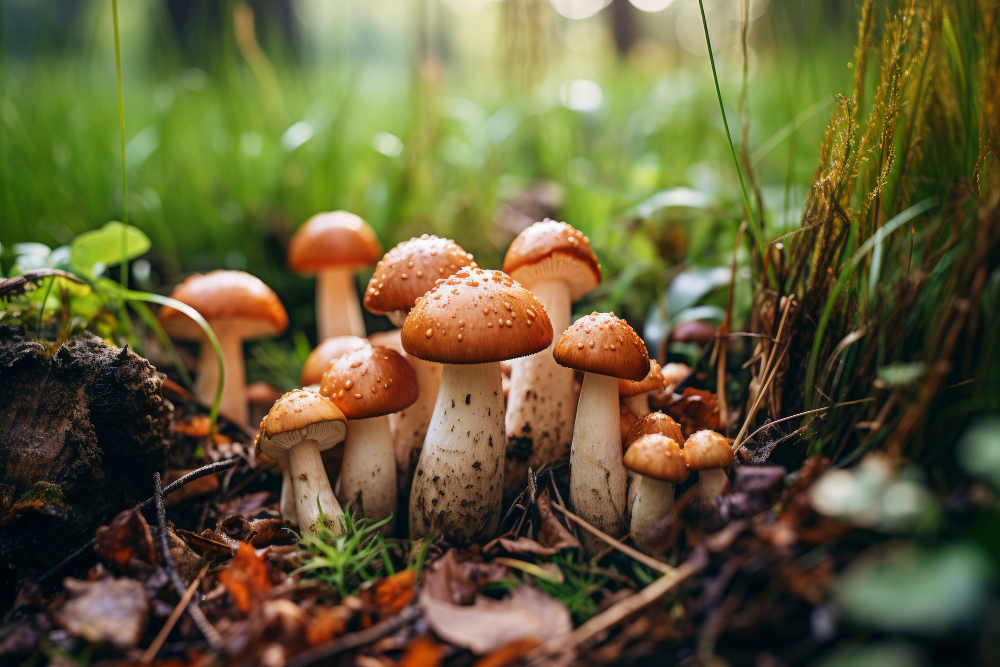

WILD LIFE
Mammals
Killarney National Park in Ireland is home to diverse mammalian species. Red deer, the park's emblematic mammal, roam freely. Foxes, badgers, and pine martens thrive in the woodlands.

Birds
Killarney National Park's avian tapestry includes the graceful gray heron, soaring peregrine falcons, and the majestic white-tailed eagle, successfully reintroduced to the region. Melodic

Ode to Friendship
"In nature's embrace, a friendship blooms, between humans and creatures in shared rooms. Paws and hands, a bond profound, whispers of kinship, a love unbound."
Rare Flora
Nestled in Killarney National Park, rare flora graces the landscape, including the elusive Killarney fern and marsh orchid. These botanical gems add a unique charm to the park's lush, diverse ecosystems.

Fungi
Fungi exhibit various forms, from microscopic molds to large mushrooms. Mycorrhizal fungi form symbiotic relationships with plants, enhancing nutrient absorption. .
Visit our Spotted Form to submit your sightings.